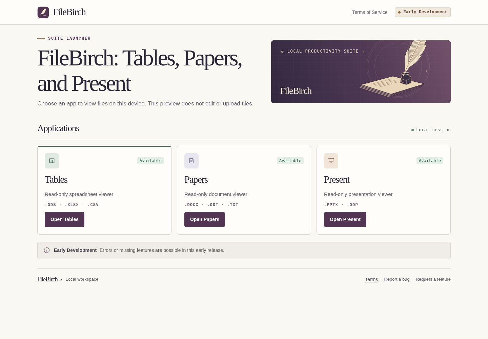
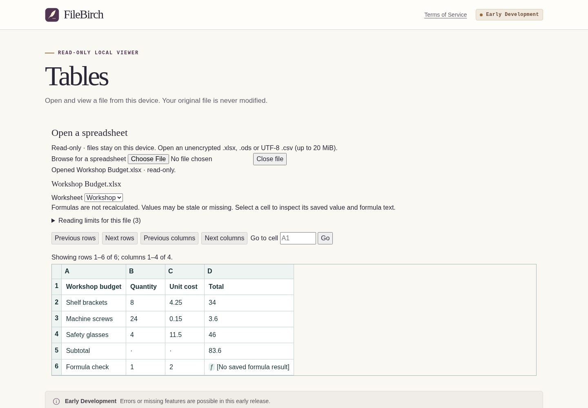
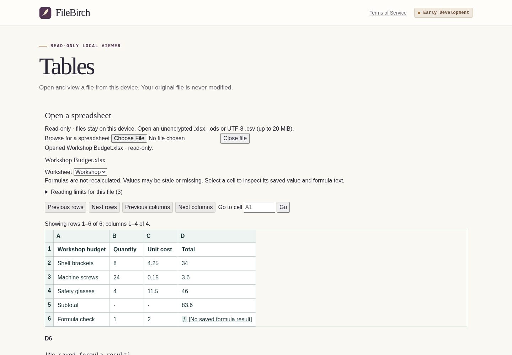
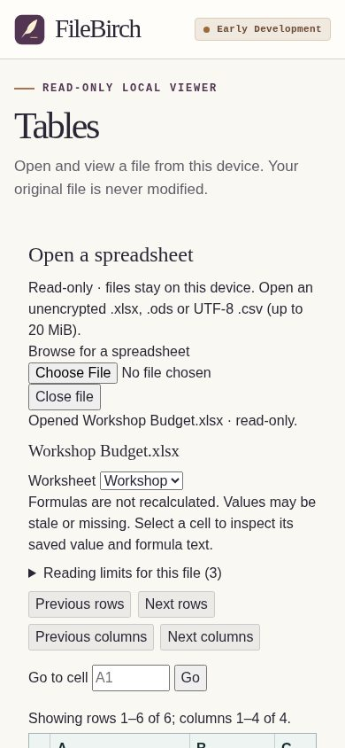
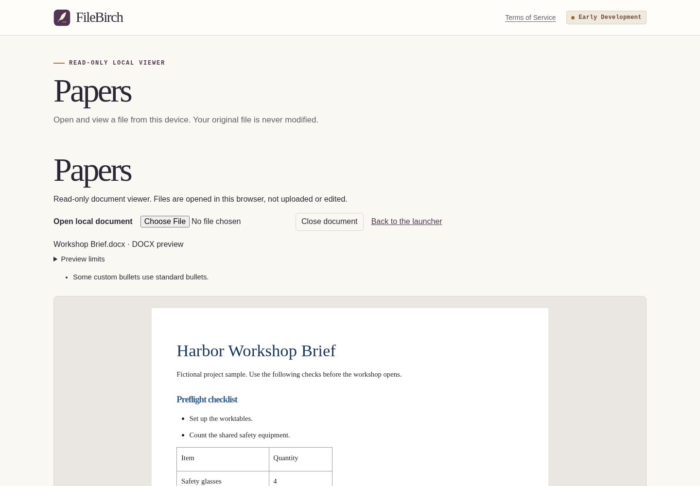
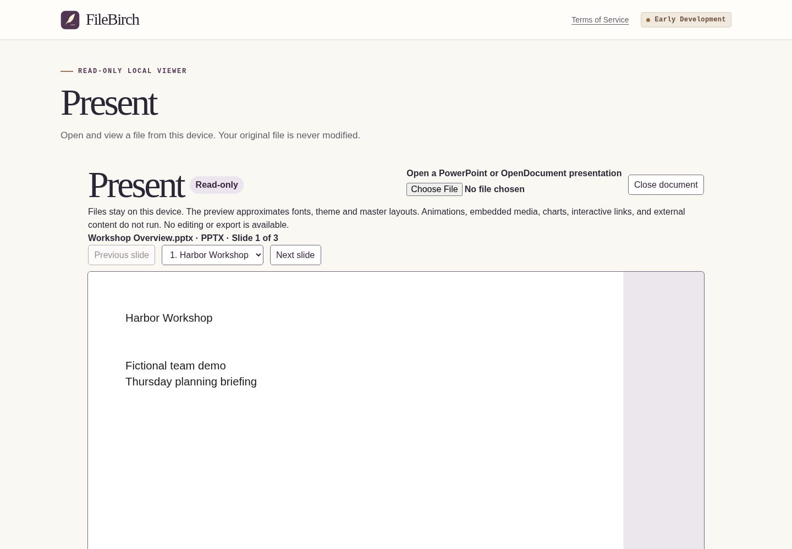
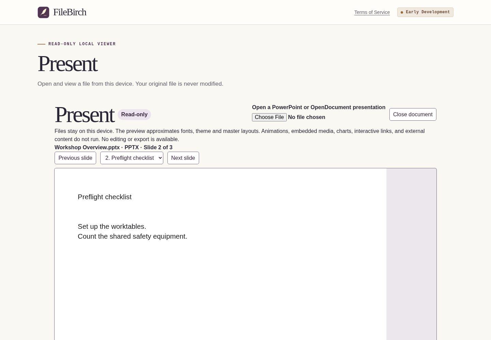

Browser office tools
FileBirch
FileBirch is a browser-based suite of read-only viewers for office files on your device. Use Tables for spreadsheets, Papers for text documents, and Present for slides.
Early Development · Read-only 0.2 viewer preview. Errors and missing features are possible.

Launcher
Open any viewer from one page. The preview processes supported files on your device, without uploading them.


Tables
Open XLSX, ODS and UTF-8 CSV spreadsheets. Switch worksheets or use Go to cell. Select a cell to inspect stored formula details and any saved value. The viewer does not recalculate or evaluate formulas.






Papers
Open DOCX, ODT and UTF-8 TXT files. Preview readable text, supported formatting, tables and inline images locally. Complex layout can look different from your original editor.


Present
Open PPTX and ODP slide decks. Move between slides and preview supported objects in order. Complex design and effects may look different from the original.


Working with files
The preview does not edit or export office files and never modifies the original. Closing the viewer discards the open view, not the source file.

